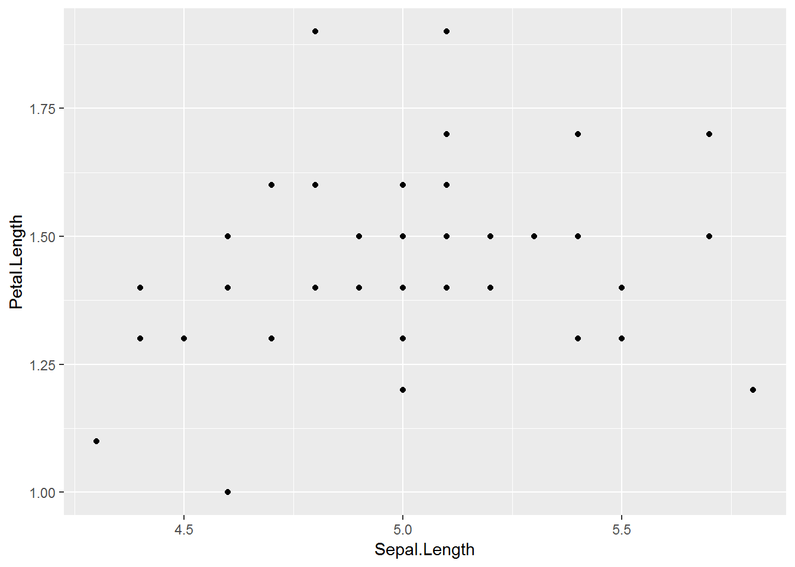
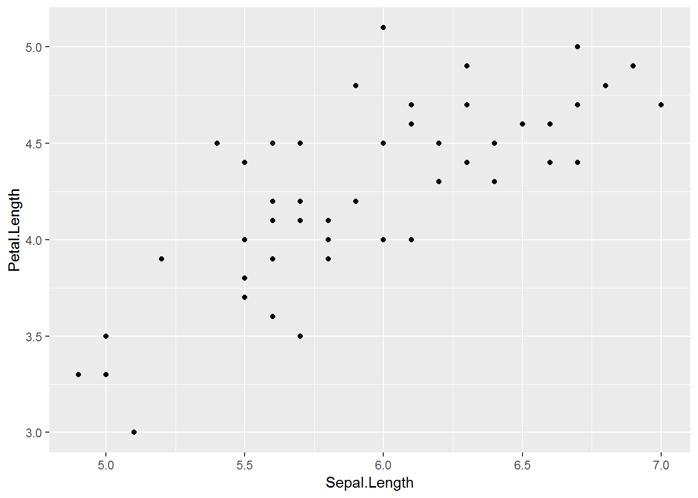
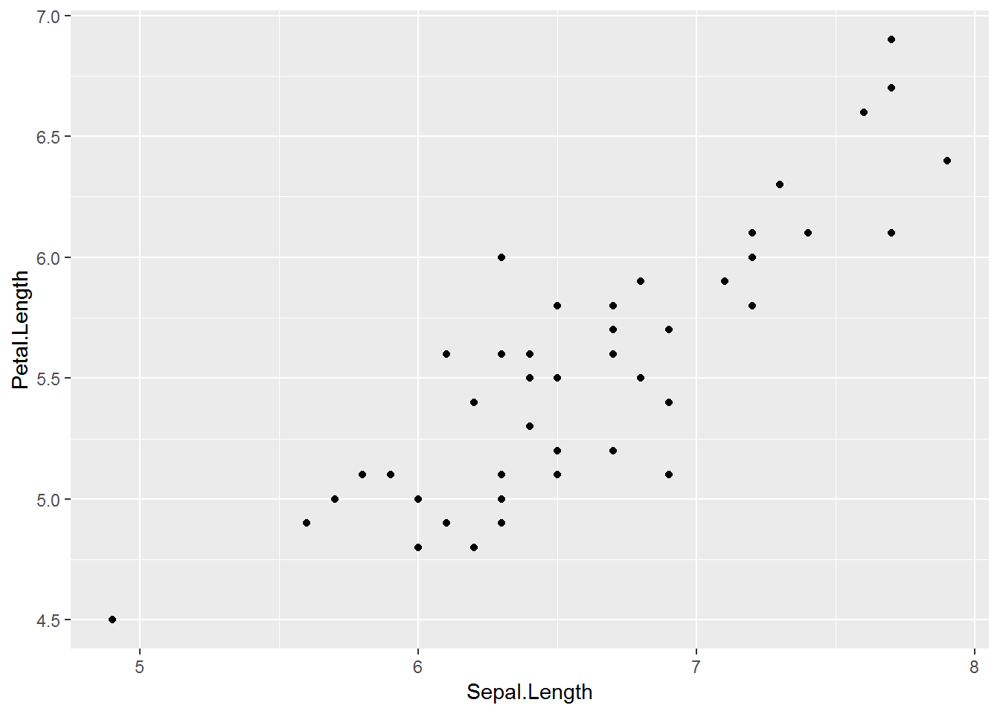
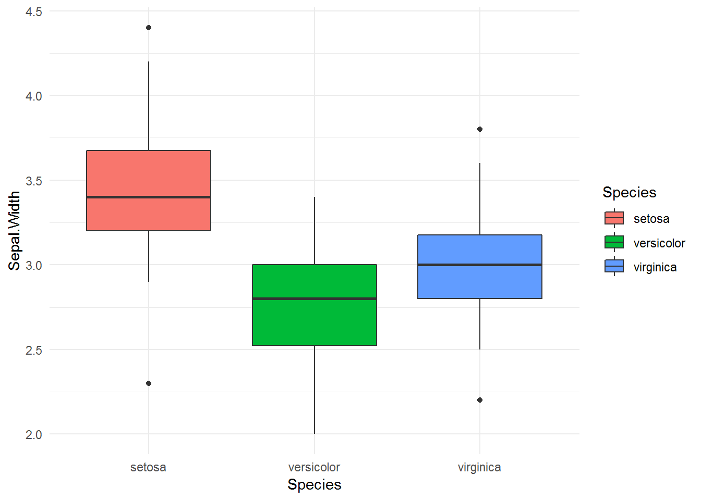

Chương 5 Lập trình chức năng hàm với purrr
Khi phân tích dữ liệu phức tạp, ta thường xuyên phải thực hiện một nhóm các phân tích tương tự nhau cho các nhóm dữ liệu khác nhau. Việc sử dụng các hàm làm đơn vị thao tác cơ bản và phối hợp các hàm với nhau được gọi là lập trình chức năng hàm (functional programming). Để đơn giản, ta xét ví dụ sau.
Sử dụng tập dữ liệu iris, với mỗi nhóm của Species, xây dựng mô hình hồi quy giữa Sepal.Length và Petal.Length, so sánh giá trị r.squared giữa các mô hình.
Với cách làm thông thường, ta sẽ phải thức hiện theo thứ tự sau:
- Tạo các data.frame cho từng giá trị của Species
- Với mỗi data.frame vừa tạo, xây dựng mô hình
lm - Với mỗi mô hình vừa tạo, chiết xuất giá trị
r.squaredvà lưu vào một data.frame
Cách triển khai trên có thể sử dụng vòng lặp trong R với phương án như sau
library(dplyr)
category <- iris$Species %>% levels %>% as.character()
model_result <- data.frame()
for (i in category){
df <- iris %>% filter(Species == i)
model <- lm(Sepal.Length ~ Sepal.Width, data = df)
model_summary <- summary(model)
df_temp <- data.frame(species = i,
r.square = model_summary$r.squared)
model_result <- bind_rows(model_result, df_temp)
}Tuy nhiên, với lập trình chức năng hàm, ta có thể làm rất đơn giản như sau.
library(purrr)
iris %>%
split(.$Species) %>%
map(~lm(Sepal.Length ~ Sepal.Width, data = .)) %>%
map(summary) %>%
map_dbl("r.squared")## setosa versicolor virginica
## 0.5514 0.2766 0.2091Trong chương này, chúng ta sẽ tìm hiểu các cách thức cơ bản lập trình chức năng hàm với R qua package purrr. Việc nắm vững kiến thức và kỹ năng lập trình hàm có rất nhiều ứng dụng trong công việc phân tích, giúp giảm thiểu rất lớn thời gian phân tích, làm cho quá trình phân tích mạch lạc hơn rất nhiều trong các bài toán khám phá dữ liệu
5.1 Nhóm hàm map
Công thức tổng quát của nhóm hàm map
Giải thích: Với mỗi giá trị của .x, thực hiện .f. Trong đó, x là một list.
Hàm map làm hàm tổng quát, ngoài ra, map còn có các biến thể chính sau
| Câu lênh | Kết quả |
|---|---|
| map | list |
| map_dbl | vector dạng double |
| map_int | vector dạng int |
| map_chr | vector dạng character |
| map_df | data.frame |
## $Sepal.Length
## [1] "numeric"
##
## $Sepal.Width
## [1] "numeric"
##
## $Petal.Length
## [1] "numeric"
##
## $Petal.Width
## [1] "numeric"
##
## $Species
## [1] "factor"## Sepal.Length Sepal.Width Petal.Length Petal.Width
## "numeric" "numeric" "numeric" "numeric"
## Species
## "factor"## # A tibble: 1 x 5
## Sepal.Length Sepal.Width Petal.Length Petal.Width
## <chr> <chr> <chr> <chr>
## 1 numeric numeric numeric numeric
## # ... with 1 more variable: Species <chr>Map theo điều kiện với map_if và map_at
Tương tự với map, nhóm map_if và map_at cho phép tính toán theo điều kiện hoặc vị trí của list. Xem ví dụ sau.
## 'data.frame': 150 obs. of 5 variables:
## $ Sepal.Length: Factor w/ 35 levels "4.3","4.4","4.5",..: 9 7 5 4 8 12 4 8 2 7 ...
## $ Sepal.Width : Factor w/ 23 levels "2","2.2","2.3",..: 15 10 12 11 16 19 14 14 9 11 ...
## $ Petal.Length: Factor w/ 43 levels "1","1.1","1.2",..: 5 5 4 6 5 8 5 6 5 6 ...
## $ Petal.Width : Factor w/ 22 levels "0.1","0.2","0.3",..: 2 2 2 2 2 4 3 2 2 1 ...
## $ Species : Factor w/ 3 levels "setosa","versicolor",..: 1 1 1 1 1 1 1 1 1 1 ...## List of 5
## $ Sepal.Length: chr [1:150] "5.1" "4.9" "4.7" "4.6" ...
## $ Sepal.Width : chr [1:150] "3.5" "3" "3.2" "3.1" ...
## $ Petal.Length: num [1:150] 1.4 1.4 1.3 1.5 1.4 1.7 1.4 1.5 1.4 1.5 ...
## $ Petal.Width : num [1:150] 0.2 0.2 0.2 0.2 0.2 0.4 0.3 0.2 0.2 0.1 ...
## $ Species : Factor w/ 3 levels "setosa","versicolor",..: 1 1 1 1 1 1 1 1 1 1 ...5.2 Sửa đổi giá trị với modify
Tương tự như map, modify cho áp dụng hàm vào một nhóm các list. Tuy nhiên, khác với map, modify cho ra kết quả với cấu trúc dữ liệu ban đâu.
## List of 5
## $ Sepal.Length: num [1:150] 5.1 4.9 4.7 4.6 5 5.4 4.6 5 4.4 4.9 ...
## $ Sepal.Width : num [1:150] 3.5 3 3.2 3.1 3.6 3.9 3.4 3.4 2.9 3.1 ...
## $ Petal.Length: num [1:150] 1.4 1.4 1.3 1.5 1.4 1.7 1.4 1.5 1.4 1.5 ...
## $ Petal.Width : num [1:150] 0.2 0.2 0.2 0.2 0.2 0.4 0.3 0.2 0.2 0.1 ...
## $ Species : chr [1:150] "setosa" "setosa" "setosa" "setosa" ...## 'data.frame': 150 obs. of 5 variables:
## $ Sepal.Length: num 5.1 4.9 4.7 4.6 5 5.4 4.6 5 4.4 4.9 ...
## $ Sepal.Width : num 3.5 3 3.2 3.1 3.6 3.9 3.4 3.4 2.9 3.1 ...
## $ Petal.Length: num 1.4 1.4 1.3 1.5 1.4 1.7 1.4 1.5 1.4 1.5 ...
## $ Petal.Width : num 0.2 0.2 0.2 0.2 0.2 0.4 0.3 0.2 0.2 0.1 ...
## $ Species : chr "setosa" "setosa" "setosa" "setosa" ...5.3 Ứng dụng
5.3.1 Biến đổi dữ liệu với modify và map_df
Khi phân tích dữ liệu, đôi khi ta cần chuẩn hóa dữ liệu cho tất cả các biến numeric trong data.frame. Với nhóm hàm của purrr, ta có thể thực hiện như sau
# Tạo hàm
standardize_data <- function(x){
x <- (x - min(x))/(max(x) - min(x))
return(x)
}
# Sử dụng map_df
df <- iris
df[, 1:4] <- df[, 1:4] %>% map_df(standardize_data)
df %>% head## Sepal.Length Sepal.Width Petal.Length Petal.Width
## 1 0.22222 0.6250 0.06780 0.04167
## 2 0.16667 0.4167 0.06780 0.04167
## 3 0.11111 0.5000 0.05085 0.04167
## 4 0.08333 0.4583 0.08475 0.04167
## 5 0.19444 0.6667 0.06780 0.04167
## 6 0.30556 0.7917 0.11864 0.12500
## Species
## 1 setosa
## 2 setosa
## 3 setosa
## 4 setosa
## 5 setosa
## 6 setosa# Sử dụng modify
# Sử dụng map_df
df <- iris
df <- df %>% modify_if(is.numeric, standardize_data)
df %>% head## Sepal.Length Sepal.Width Petal.Length Petal.Width
## 1 0.22222 0.6250 0.06780 0.04167
## 2 0.16667 0.4167 0.06780 0.04167
## 3 0.11111 0.5000 0.05085 0.04167
## 4 0.08333 0.4583 0.08475 0.04167
## 5 0.19444 0.6667 0.06780 0.04167
## 6 0.30556 0.7917 0.11864 0.12500
## Species
## 1 setosa
## 2 setosa
## 3 setosa
## 4 setosa
## 5 setosa
## 6 setosa5.3.2 Phân tích nhiều nhóm khác nhau cùng lúc
Khi phân tích dữ liệu, đôi khi ta muốn xây dựng chuẩn phân tích dữ liệu qua một số bước, bao gồm:
- Tính toán các chỉ số thống kê
- Vẽ đồ thị
- Xây dụng mô hình đơn giản
Quy trình này sẽ không gặp vấn đề khi ta chỉ phải xử lý với một nhóm nhỏ dữ liệu. Khi số lượng nhóm tăng lên, việc phân tích dữ liệu trở nên khó khăn hơn rất nhiều và tốn thời gian. Tuy nhiên, với purrr, các vấn đề này trở nên rất đơn giản.
Ví dụ: Với mỗi nhóm của Species trong tập dữ liệu iris:
- Tổng hơp dữ liệu
- Vẽ đồ thị điểm giữa Sepal.Length vs. Petal.Length
- Xây dựng mô hình hồi quy Sepal.Length ~ Petal.Length
library(tidyverse)
# Bước một: Xây dựng hàm
my_stat <- function(data){
print("Summary data")
print("====================")
summary(data) %>% print
p <- data %>%
ggplot(aes(Sepal.Length, Petal.Length)) +
geom_point()
print("Summary model")
print("====================")
model <- lm(Sepal.Length ~ Petal.Length, data = data)
summary(model) %>% print
p %>% print
}
# Test hàm
my_stat(iris)## [1] "Summary data"
## [1] "===================="
## Sepal.Length Sepal.Width Petal.Length
## Min. :4.30 Min. :2.00 Min. :1.00
## 1st Qu.:5.10 1st Qu.:2.80 1st Qu.:1.60
## Median :5.80 Median :3.00 Median :4.35
## Mean :5.84 Mean :3.06 Mean :3.76
## 3rd Qu.:6.40 3rd Qu.:3.30 3rd Qu.:5.10
## Max. :7.90 Max. :4.40 Max. :6.90
## Petal.Width Species
## Min. :0.1 setosa :50
## 1st Qu.:0.3 versicolor:50
## Median :1.3 virginica :50
## Mean :1.2
## 3rd Qu.:1.8
## Max. :2.5
## [1] "Summary model"
## [1] "===================="
##
## Call:
## lm(formula = Sepal.Length ~ Petal.Length, data = data)
##
## Residuals:
## Min 1Q Median 3Q Max
## -1.2468 -0.2966 -0.0152 0.2768 1.0027
##
## Coefficients:
## Estimate Std. Error t value Pr(>|t|)
## (Intercept) 4.3066 0.0784 54.9 <2e-16 ***
## Petal.Length 0.4089 0.0189 21.6 <2e-16 ***
## ---
## Signif. codes:
## 0 '***' 0.001 '**' 0.01 '*' 0.05 '.' 0.1 ' ' 1
##
## Residual standard error: 0.407 on 148 degrees of freedom
## Multiple R-squared: 0.76, Adjusted R-squared: 0.758
## F-statistic: 469 on 1 and 148 DF, p-value: <2e-16
# Bước 2: Xây dựng map
iris$Species %>%
unique %>%
map(function(value){
print(paste0("Analysis of ", value))
iris %>%
filter(Species == value) %>%
my_stat
})## [1] "Analysis of setosa"
## [1] "Summary data"
## [1] "===================="
## Sepal.Length Sepal.Width Petal.Length
## Min. :4.30 Min. :2.30 Min. :1.00
## 1st Qu.:4.80 1st Qu.:3.20 1st Qu.:1.40
## Median :5.00 Median :3.40 Median :1.50
## Mean :5.01 Mean :3.43 Mean :1.46
## 3rd Qu.:5.20 3rd Qu.:3.67 3rd Qu.:1.57
## Max. :5.80 Max. :4.40 Max. :1.90
## Petal.Width Species
## Min. :0.100 setosa :50
## 1st Qu.:0.200 versicolor: 0
## Median :0.200 virginica : 0
## Mean :0.246
## 3rd Qu.:0.300
## Max. :0.600
## [1] "Summary model"
## [1] "===================="
##
## Call:
## lm(formula = Sepal.Length ~ Petal.Length, data = data)
##
## Residuals:
## Min 1Q Median 3Q Max
## -0.5724 -0.2067 -0.0308 0.1734 0.9361
##
## Coefficients:
## Estimate Std. Error t value Pr(>|t|)
## (Intercept) 4.213 0.416 10.14 1.6e-13 ***
## Petal.Length 0.542 0.282 1.92 0.061 .
## ---
## Signif. codes:
## 0 '***' 0.001 '**' 0.01 '*' 0.05 '.' 0.1 ' ' 1
##
## Residual standard error: 0.343 on 48 degrees of freedom
## Multiple R-squared: 0.0714, Adjusted R-squared: 0.052
## F-statistic: 3.69 on 1 and 48 DF, p-value: 0.0607
## [1] "Analysis of versicolor"
## [1] "Summary data"
## [1] "===================="
## Sepal.Length Sepal.Width Petal.Length
## Min. :4.90 Min. :2.00 Min. :3.00
## 1st Qu.:5.60 1st Qu.:2.52 1st Qu.:4.00
## Median :5.90 Median :2.80 Median :4.35
## Mean :5.94 Mean :2.77 Mean :4.26
## 3rd Qu.:6.30 3rd Qu.:3.00 3rd Qu.:4.60
## Max. :7.00 Max. :3.40 Max. :5.10
## Petal.Width Species
## Min. :1.00 setosa : 0
## 1st Qu.:1.20 versicolor:50
## Median :1.30 virginica : 0
## Mean :1.33
## 3rd Qu.:1.50
## Max. :1.80
## [1] "Summary model"
## [1] "===================="
##
## Call:
## lm(formula = Sepal.Length ~ Petal.Length, data = data)
##
## Residuals:
## Min 1Q Median 3Q Max
## -0.7348 -0.2027 -0.0206 0.2609 0.6996
##
## Coefficients:
## Estimate Std. Error t value Pr(>|t|)
## (Intercept) 2.408 0.446 5.39 2.1e-06 ***
## Petal.Length 0.828 0.104 7.95 2.6e-10 ***
## ---
## Signif. codes:
## 0 '***' 0.001 '**' 0.01 '*' 0.05 '.' 0.1 ' ' 1
##
## Residual standard error: 0.343 on 48 degrees of freedom
## Multiple R-squared: 0.569, Adjusted R-squared: 0.56
## F-statistic: 63.3 on 1 and 48 DF, p-value: 2.59e-10
## [1] "Analysis of virginica"
## [1] "Summary data"
## [1] "===================="
## Sepal.Length Sepal.Width Petal.Length
## Min. :4.90 Min. :2.20 Min. :4.50
## 1st Qu.:6.22 1st Qu.:2.80 1st Qu.:5.10
## Median :6.50 Median :3.00 Median :5.55
## Mean :6.59 Mean :2.97 Mean :5.55
## 3rd Qu.:6.90 3rd Qu.:3.17 3rd Qu.:5.88
## Max. :7.90 Max. :3.80 Max. :6.90
## Petal.Width Species
## Min. :1.40 setosa : 0
## 1st Qu.:1.80 versicolor: 0
## Median :2.00 virginica :50
## Mean :2.03
## 3rd Qu.:2.30
## Max. :2.50
## [1] "Summary model"
## [1] "===================="
##
## Call:
## lm(formula = Sepal.Length ~ Petal.Length, data = data)
##
## Residuals:
## Min 1Q Median 3Q Max
## -0.7341 -0.2364 -0.0313 0.2377 0.7621
##
## Coefficients:
## Estimate Std. Error t value Pr(>|t|)
## (Intercept) 1.0597 0.4668 2.27 0.028 *
## Petal.Length 0.9957 0.0837 11.90 6.3e-16 ***
## ---
## Signif. codes:
## 0 '***' 0.001 '**' 0.01 '*' 0.05 '.' 0.1 ' ' 1
##
## Residual standard error: 0.323 on 48 degrees of freedom
## Multiple R-squared: 0.747, Adjusted R-squared: 0.742
## F-statistic: 142 on 1 and 48 DF, p-value: 6.3e-16
## [[1]]
##
## [[2]]
##
## [[3]]
5.3.3 Phân tích nhiều biến trong dataframe cùng lúc
Một biên thể khác của map là sử dụng trong phân tích cùng lúc nhiều biến số với một biến thuộc dạng nhóm (group). Khi lập trình với NSE, ta cần phải sử dụng hàm syms() trước khi map
Ví dụ: Với mỗi biến số trong tập dữ liệu iris:
- So sánh giá trị trung bình của biến này với các nhóm khác nhau của
Species - Vẽ biểu đồ boxplot
library(tidyverse)
# Bước 1: Xây dựng hàm
my_stat <- function(x){
x <- enquo(x)
iris %>%
group_by(Species) %>%
summarise(mean = mean(!!x)) %>%
print
iris %>%
ggplot(aes(Species, !!x)) +
geom_boxplot(aes(fill = Species)) +
theme_minimal()
}
my_stat(Sepal.Length)## # A tibble: 3 x 2
## Species mean
## <fct> <dbl>
## 1 setosa 5.01
## 2 versicolor 5.94
## 3 virginica 6.59
## # A tibble: 3 x 2
## Species mean
## <fct> <dbl>
## 1 setosa 5.01
## 2 versicolor 5.94
## 3 virginica 6.59
## # A tibble: 3 x 2
## Species mean
## <fct> <dbl>
## 1 setosa 3.43
## 2 versicolor 2.77
## 3 virginica 2.97
## # A tibble: 3 x 2
## Species mean
## <fct> <dbl>
## 1 setosa 1.46
## 2 versicolor 4.26
## 3 virginica 5.55
## # A tibble: 3 x 2
## Species mean
## <fct> <dbl>
## 1 setosa 0.246
## 2 versicolor 1.33
## 3 virginica 2.03## [[1]]
##
## [[2]]
##
## [[3]]
##
## [[4]]
Lưu ý: Việc ứng dụng purrr với các hàm tính toán thống kê sẽ cho phép phân tích khám phá dữ liệu hàng loạt